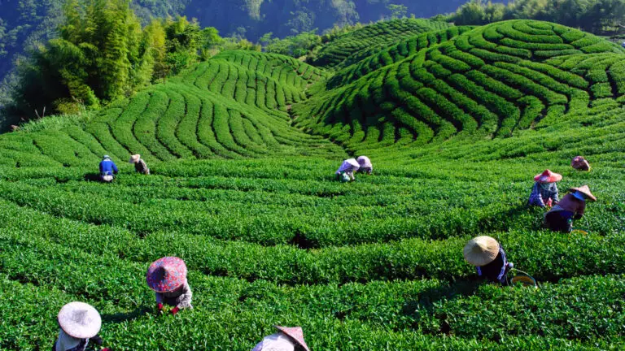
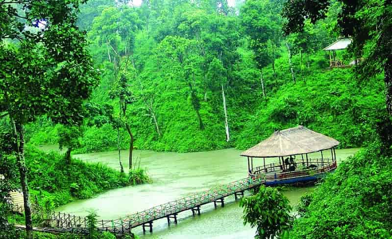
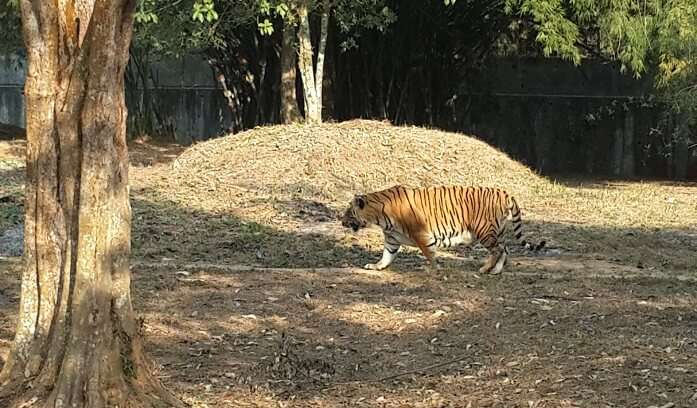

FUN FACTS
Tripura is a landlocked north-eastern state of India. Its capital city – Agartala is in fact, one of the largest cities of northeast India. In the word Tripura, “Tui” means water, and “Pra” means near water. It is fifth largest tea producing state in the country and also produces the highest natural gas in India.
1.Discover the Best Teas in the World.
Tripura has 21 tea processing factories and 2500 small tea growers producing about 8.66 million kg of tea every year. It is the fifth largest tea producing State in India It even has a noteworthy venture called “Bio-tea,” which doesn’t have any chemical residue.

2. People here are way too Literate then you Assumed
Tripura has the Highest Literacy Rate of 94.65% in India. The figure was based on the data provided by the Indian Statistical Institute that evaluated data in different evaluating centres. According to the ex-CM Manik Sarkar, in 8142 Literacy centres, 8154 teachers have worked tirelessly in reaching the goal under the aegis of the state literacy mission.
3. A Green Energy Revolution is Underway.
Natural gas produced in Tripura is available in non-toxic form with 94% methane in it. ONGC has an immense contribution in increasing the state’s revenue that usually comes out of producing Natural gas. In fact, Tripura is the highest producer of Natural Gas in India.
4. India's Third Largest International Gateway is Ready to Serve you.
Tripura has the third largest International internet gateway in India after Mumbai and Chennai, operational in Agartala. In the long term, it will help in expanding the network with telecommunication and web and also would help to configure smart devices very quickly.

5. Agriculture is that sector which Drives the Economy Here
42% of the population of Tripura depends on agriculture and its allied activities for livelihood.
6.It’s a Diverse State with a truly Big Heart.
Well, there are 19 tribes and then there are many sub-tribes in Tripura. One-third of the state population belongs to the scheduled tribe.

Know More about the State